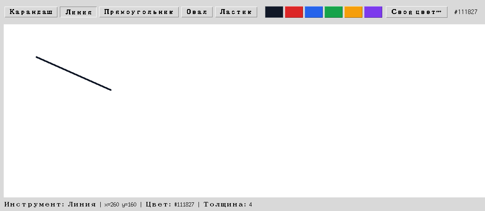

Глава 18 · Проект: приложение для рисования
Получаем позицию мыши
События мыши позволяют превратить движение курсора в настоящую линию на холсте.
Получаем позицию мыши
Как и в главе 17, реагировать на мышь помогает .bind() —
только вместо клавиатурных событий здесь события мыши: <Button-1>
(нажатие левой кнопки), <B1-Motion> (движение с зажатой
левой кнопкой), <ButtonRelease-1> (кнопку отпустили).
poziciya_myshi.py
def pokazat_poziciyu(event):
pozicia_label.config(text=f"x={event.x}, y={event.y}")
canvas.bind("<Motion>", pokazat_poziciyu)event.x и event.y — координаты
курсора относительно холста, в тех же единицах, что и у самого Canvas.
Рисуем линии
Три события вместе создают эффект «рисования от точки до точки»: запоминаем начало на
<Button-1>, рисуем линию к текущей позиции на каждом
<B1-Motion>:
risuem_linii.py
start_x, start_y = None, None
def nachalo_risovaniya(event):
global start_x, start_y
start_x, start_y = event.x, event.y
def vo_vremya_risovaniya(event):
canvas.create_line(start_x, start_y, event.x, event.y, fill=tekuschij_cvet, width=tolschina)
canvas.bind("<Button-1>", nachalo_risovaniya)
canvas.bind("<B1-Motion>", vo_vremya_risovaniya)

create_line — как forward() у Turtle, только по координатам
canvas.create_line(x1, y1, x2, y2) рисует прямую между двумя точками — концептуально то же самое, что goto() у Turtle из главы 6, только без «черепашки», которая сама туда едет.Практика: позиция мыши и рисование линий
Модуль tkinter открывает нативное окно Python — выполните локально в VS Code, PyCharm или Jupyter
Практика выполняется локально